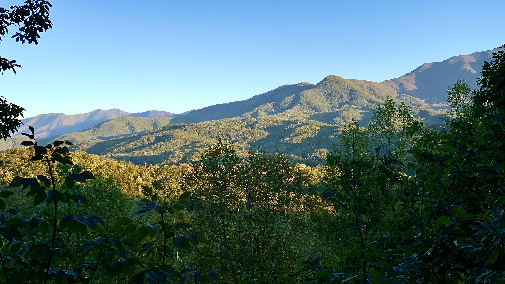

Gatlinburg

Gatlinburg is a beautiful town with many attractions.
The Sugarlands Distilling co. is a great place to get some
moonshine tasting in and to explore the strip. The Hollywood
car museum and Ripley's believe it or not are must visit attractions.
The Mountains


The mountains in Gatlinburg are amazing. During our
trip it was mostly sunny but when the rain came you
could see the mountains "smoking". Both views were incredibly
beautiful.
Hiking


Hiking up the trails of the rocky mountains was a very unique experience.
It was difficult because of the elevation changes, TODO
After we were
able to get past them the views of the waterfalls and creeks were
spectacular.